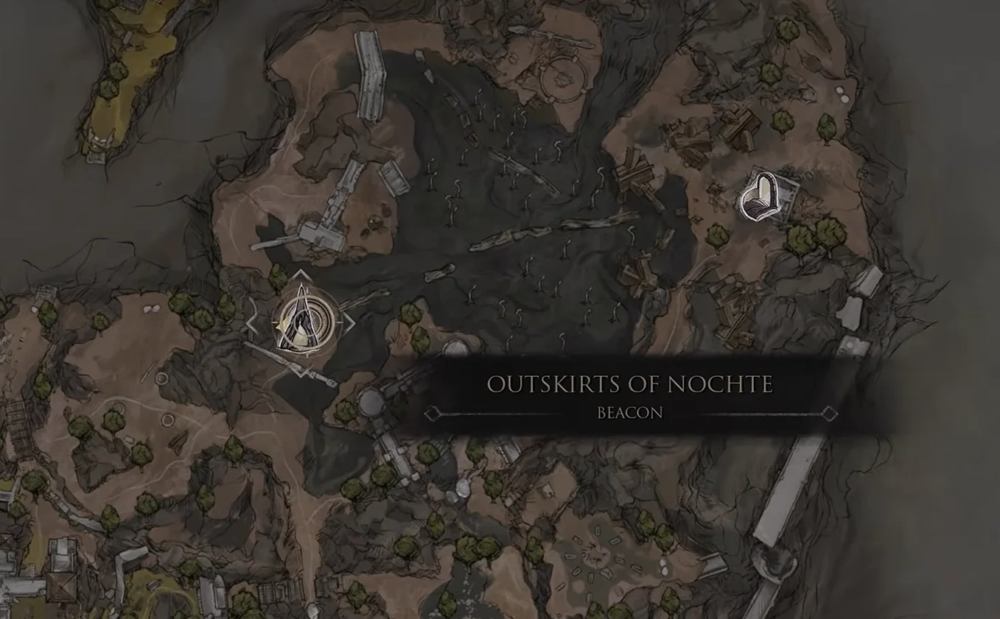
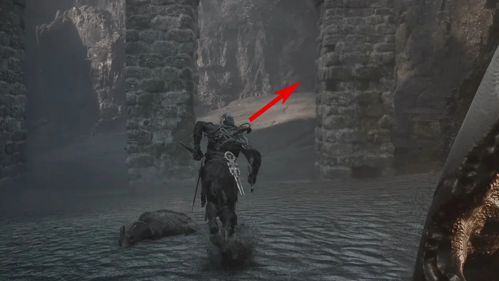
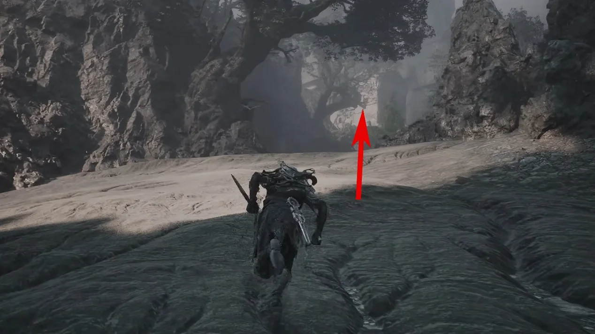
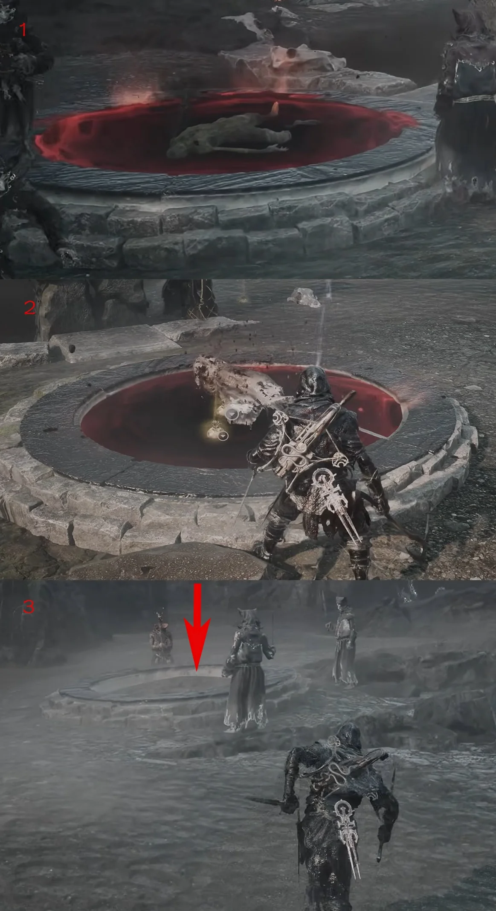
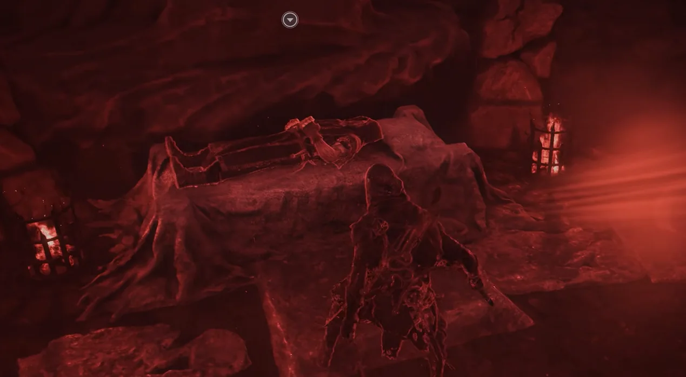
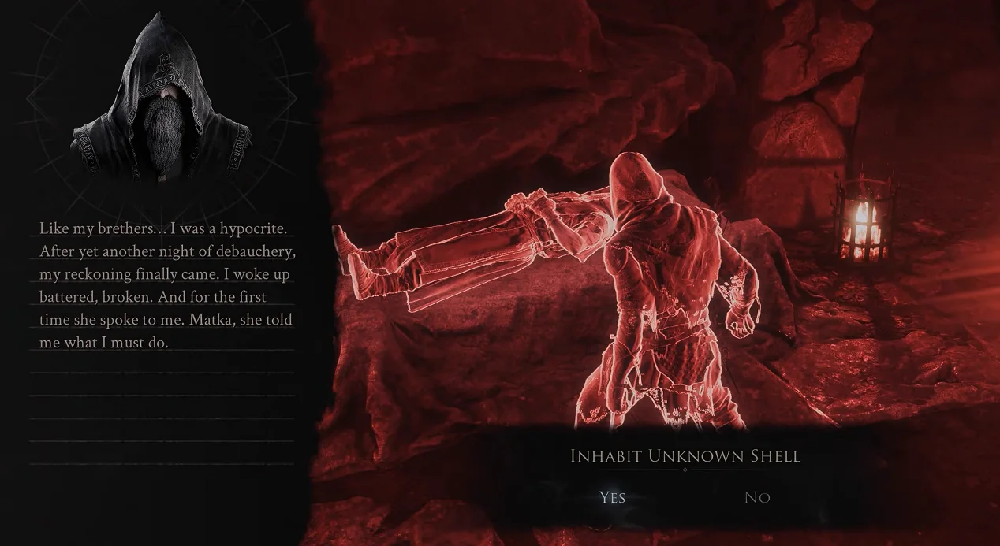

Shell acquisition · Fainweald
How to get
Smert
Reach Outskirts of Nochte Beacon, fill all three blood pools by defeating the surrounding enemies, then inhabit the Shell beside the completed ritual.
- Region
- Fainweald
- Starting point
- Outskirts of Nochte Beacon
- Unlock
- Smert

Route 01Travel to Outskirts of Nochte Beacon. The three blood pools needed for this Shell are in the nearby ruins.

Route 02Leave the Beacon by the left-hand route shown, then turn toward the upper-right path through the stone gateway.

Route 03Continue uphill through the marked gap. Clear enemies as you go; their defeats are what charge the ritual pools.

Route 04Locate the three blood pools. One may already be filled; defeat enemies near the other two until every pool is full.

Route 05Once all three pools are filled, interact with the body lying beside the ritual area.

Route 06Choose Inhabit Unknown Shell to unlock Smert.